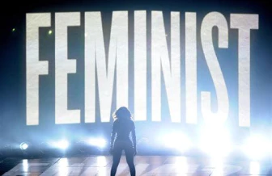
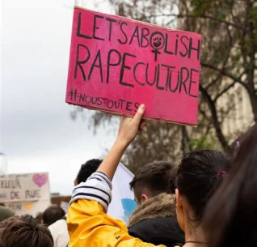
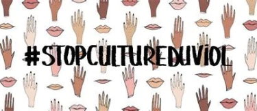
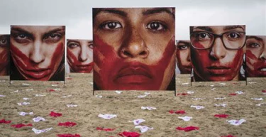

Ce livre est un livre redéfinissant plein de termes concernant le féminisme. Le livre est sorti le 20 juin 2018. Engagées depuis de nombreuses années dans l'association Osez le féminisme crée en 2009,les deux autrices sont des militantes, elle lutte "pour l'égalité réelle entre les hommes et les femmes". Ce livre aborde tous les sujets concernant le féminisme : sexualité, harcèlement, consentement, politique, solidarité féminine, rien n’est oublié.
Cependant nous allons nous concentrer plus précisément sur un sujet en particulier la culture du viol. La culture du viol est un sujet essentiel pour comprendre le féminisme. Ce chapitre est l'un des plus important dans le livre, il est long et expliqué avec des mots simples. La culture du viol dite "rape culture" en anglais est un concept sociologique. Ce concept apparait durant les mouvements féministes aux Etats-Unis. La sexologue Jocelyne Robert décrit la culture du viol comme un concept établissant des liens entre la violence, le harcèlements, les agressions sexuel et la culture de la société ou ces crimes se commettent.
En outre, nous sommes dans une société contrôlant les besoins de la femme . Ce conditionnement a donc appris aux femmes qu'elles n'avaient pas de désirs sexuel particulier. Elles ne doivent pas l'exprimer. Contrairement aux hommes qui eux peuvent l'affirmer. Les femmes doivent être imberbe. Tel le corps d'un enfants qui n'a pas atteint la puberté . Par conséquent, les codes que les femmes doivent respecter s'approchent fortement de l'apparence d'un enfant . On remarque donc que ces règles dictées par la société sont pédophiles. L'éducation des petites filles ne les encouragent pas du tout à se mettre en avant dans un groupe. Elle ne les encouragent pas non plus à viser le haut de l'échelle. Les femmes ne prennent pas la parole et sont interrompues. Elles s'expriment le plus souvent sur les sujets sur lesquels elles se sentent parfait
Il est évident que les femmes ne sont pas nées ainsi. La société machiste et patriarcale les a encouragées, voir obligées à agir de la sorte. Une fille doit être discrètes et la société leur a enseignée que les hommes sont de meilleurs dirigeant. Ne serait-il pas temps d'évoluer?
Seulement 10% des femmes portant plaintes et 3% des ces plaintes donnent lieu à un procès. Le viol est un crime massivement commis. La plupart du temps le penser qu'une femme qui dit "non" penses "oui" , faire des femmes des objets sexuel dans la pub ou la mode: tout cela fait partie du même système, de même que les clichés sur les viols. Ces chiffres terrifiants sont souvent sous-estimés puisqu'il reste extrêmement difficile de libérer la parole des victimes et de porter plainte.
En effet si vous vous questionner sur pourquoi les victimes de viol ont peur de parler voici les différentes raisons. La honte d'être violée hante encore trop de femmes. C'est ainsi que nous pouvons cerner un réel problème de société : ces victimes pensent alors être fautives . Cela peut empirer lorsque les personnes chargées d’accueillir les victimes de viol , au commissariat , en gendarmerie ou même à l’hôpital , manquent de formation et adoptent par conséquent des comportement totalement inappropriés. La peur du viol est profondément ancrées dans notre culture . Cependant, Le problème est traité a l'envers. On apprend d'avantage aux filles à avoir peur du viol et à chercher à l'éviter, qu'aux garçons à ne p as violer.
Bien que les femmes soient oppressée, la solidarité féminine est à son apogée en 2007 grâce au mouvement #metoo. Il devient particulièrement connu en octobre 2017. Le mouvement commence a être fortement utilisé sur les réseaux sociaux notamment sur tweeter. Ce mouvement lancé par Tarana Burke, (une militante étant elle même victime d'agressions sexuelle) a pour but de libérer la paroles des victimes. La culture du viol est un concept qui nous a conditionnés depuis notre plus jeune âges , c'est un problème qui est à l'origine une faille de notre éducation. Les mouvements comme le #metoo nous permettent de militer pour faire évoluer les mentalités, et envisager un futur meilleurs pour les prochaines générations. Pour conclure ce livre a pour but d'être informatif et de déconstruire toutes les idées reçus que la société nous a transmis. Il insiste particulièrement sur la culture du viol qui est un sujet essentiel pour comprendre l’origine du problème. Pour tout comprendre sur le féminisme d'aujourd'hui, ce livre est une bible des combats actuels. C'est un livre très riche en vocabulaire et qui montre l'immense diversité des différents courants du féminismes.
Lire l'article suivant